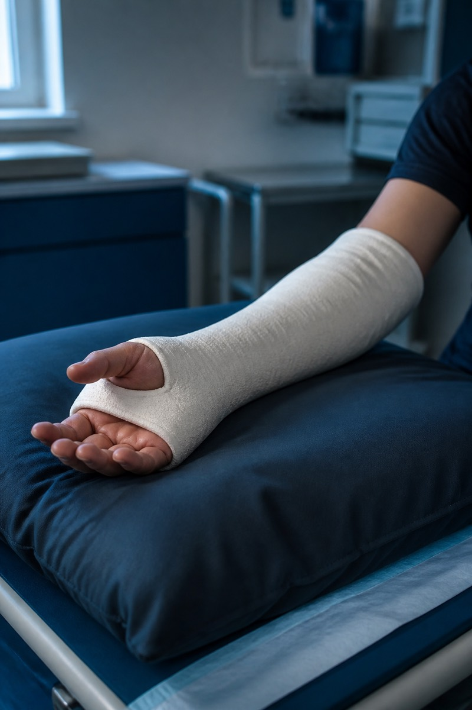

Fracture & Trauma Surgery
As a trauma surgeon serving RR Nagar and South Bengaluru, Dr. Chethan Kumar treats fractures from simple undisplaced breaks to injuries needing surgical fixation.
As a trauma surgeon serving RR Nagar and South Bengaluru, Dr. Chethan Kumar treats fractures from simple undisplaced breaks to injuries needing surgical fixation.

Bone healing often takes 6–12 weeks; joints and muscles need longer rehab. Follow-up X-rays guide when you can load the limb.